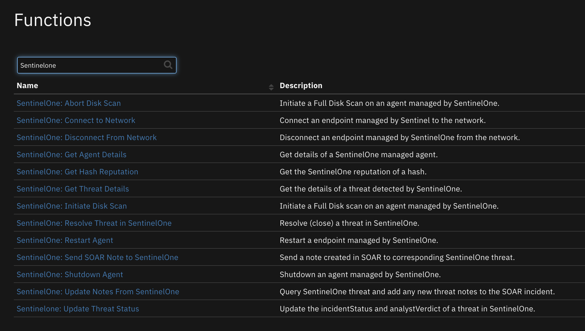
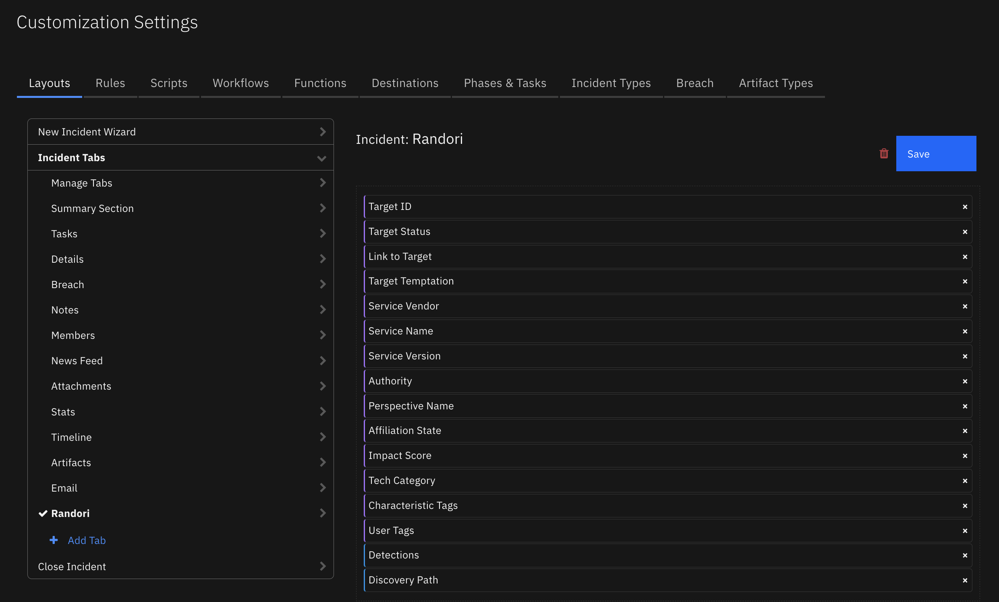

Trusteer Pinpoint Detect#
Table of Contents#
Release Notes#
Version |
Date |
Notes |
|---|---|---|
1.0.0 |
03/2023 |
Initial Release |
Overview#
IBM SOAR app for Trusteer Pinpoint Detect
IBM Security® Trusteer® Pinpoint Detect helps organizations quickly and transparently establish digital identity trust throughout a seamless customer experience without compromising on security.
IBM Security® Trusteer® Pinpoint Detect is real-time, cloud-based risk assessment software that analyzes online identities to differentiate between malicious users and true customers. Trusteer® Pinpoint Detect uses artificial intelligence and machine learning to protect digital channels against account takeover and fraudulent transactions and detect end user devices infected with high-risk malware.

Bi-directional App for Trusteer Pinpoint Detect. Parse emails from Trusteer Pinpoint Detect and create cases in SOAR and sends classification information back to Trusteer.
Key Features#
Create cases in SOAR from Trusteer Pinpoint Detect Criminal email alert feeds via email parsing script in SOAR.
A Trusteer account (PUID - Permanent User ID) maps to a case in SOAR and subsequent new alerts on the account are added to the Trusteer Alerts data table.
Send alert Classification feedback to Trusteer on a session from the Trusteer Alerts data table. Classification options are:
Pending
Confirmed legitimate
Undetermined
Confirmed fraud
Confirmed fraud (Account takeover)
Confirmed fraud (First-party)
Confirmed fraud (Mule account)
Confirmed fraud (Remote access tool)
Confirmed fraud (Social engineering)
Add artifacts to the Trusteer case via email parsing script
Add artifacts to the Trusteer case via Trusteer Alerts data table script.
Navigate links back to the Trusteer account and devices from the case.
Requirements#
This app supports the IBM Security QRadar SOAR Platform and the IBM Security QRadar SOAR for IBM Cloud Pak for Security.
SOAR platform#
The SOAR platform supports two app deployment mechanisms, Edge Gateway (formerly App Host) and integration server.
If deploying to a SOAR platform with an Edge Gateway, the requirements are:
SOAR platform >=
45.0.7899.The app is in a container-based format (available from the AppExchange as a
zipfile).
If deploying to a SOAR platform with an integration server, the requirements are:
SOAR platform >=
45.0.7899.The app is in the older integration format (available from the AppExchange as a
zipfile which contains atar.gzfile).Integration server is running
resilient-circuits>=47.1.0.If using an API key account, make sure the account provides the following minimum permissions:
Name
Permissions
Org Data
Read
Function
Read
Incidents
Read
Edit Incidents
Fields
Layouts
Read, Edit
The following SOAR platform guides provide additional information:
Edge Gateway Deployment Guide or App Host Deployment Guide: provides installation, configuration, and troubleshooting information, including proxy server settings.
Integration Server Guide: provides installation, configuration, and troubleshooting information, including proxy server settings.
System Administrator Guide: provides the procedure to install, configure and deploy apps.
The above guides are available on the IBM Documentation website at ibm.biz/soar-docs. On this web page, select your SOAR platform version. On the follow-on page, you can find the Edge Gateway Deployment Guide, App Host Deployment Guide, or Integration Server Guide by expanding Apps in the Table of Contents pane. The System Administrator Guide is available by expanding System Administrator.
Cloud Pak for Security#
If you are deploying to IBM Cloud Pak for Security, the requirements are:
IBM Cloud Pak for Security >=
1.8.Cloud Pak is configured with an Edge Gateway.
The app is in a container-based format (available from the AppExchange as a
zipfile).
The following Cloud Pak guides provide additional information:
Edge Gateway Deployment Guide or App Host Deployment Guide: provides installation, configuration, and troubleshooting information, including proxy server settings. From the Table of Contents, select Case Management and Orchestration & Automation > Orchestration and Automation Apps.
System Administrator Guide: provides information to install, configure, and deploy apps. From the IBM Cloud Pak for Security IBM Documentation table of contents, select Case Management and Orchestration & Automation > System administrator.
These guides are available on the IBM Documentation website at ibm.biz/cp4s-docs. From this web page, select your IBM Cloud Pak for Security version. From the version-specific IBM Documentation page, select Case Management and Orchestration & Automation.
Proxy Server#
The app does support a proxy server.
Python Environment#
Python 3.6 and Python 3.9 are supported. Additional package dependencies may exist for each of these packages:
resilient-circuits>=48.0.0
IBM Trusteer Development Version#
This app has been implemented using:
Product Name |
Product Version |
API URL |
API Version |
|---|---|---|---|
IBM Trusteer |
11.7 |
https://customer_name-api.trusteer.com/api/v1/ (Feedback Loop API) |
v1 |
Prerequisites#
An email address configured in Trusteer Management Application (TMA/Trustboard) to which Trusteer sends Pinpoint Detection suspicious access detected alerts.
The same email address configured in Trusteer is also configured in SOAR inbound email connection.
A Trusteer API token.
Trusteer client authorization certificate and key files to perform REST API calls.
Configure Trusteer Email Feeds#
Use the Trusteer Management Application (TMA/Trustboard) to configure the email address to receive Trusteer alert emails.
Select Setup and Administration on the left menu and click on Feeds Configuration.
Click on the + Add button at the top of the page:
Fill out the pop-up form.
The Product selection must be Pinpoint Detection and the Feed Name selection must be Pinpoint Criminal Detection suspicious access detected as this is the only feed supported by the SOAR app. Hit Save.
The email address to send Trusteer alerts appears in the list.
Configure SOAR Inbound Email Connection#
Create and configure a SOAR inbound email connection with the same email address configured in Trusteer:
The Case/incident Owner#
New cases/incidents need an owner, either an individual identified by their email address or a group name. Prior to running the app, the provided script Trusteer PPD: Create Case from Email v1.0.0, should be changed to reflect the new incident owner in your IBM SOAR platform. For example, to change the owner to l1@businessname.com, locate line 9 of the script:
# The new incident owner - the email address of a user or the name of a group and cannot be blank.
# Change this value to reflect who will be the owner of the incident before running the script.
new_case_owner = "Trusteer Pinpoint Detect case owner"
Edit the line:
# The new incident owner - the email address of a user or the name of a group and cannot be blank.
# Change this value to reflect who will be the owner of the incident before running the script.
newIncidentOwner = "l1@businessname.com"
Enable the Rule: Trusteer PPD: Parse Trusteer Email v1.0.0#
Once the new case owner is defined in the Trusteer PPD: Create Case from Email v1.0.0 script, enable the included rule: Trusteer PPD: Parse Trusteer Email v1.0.0
Permissions#
Trusteer account
Trusteer API Token
Trusteer client authorization certificate and key files
Installation#
Install#
To install or uninstall an App or Integration on the SOAR platform, see the documentation at ibm.biz/soar-docs.
To install or uninstall an App on IBM Cloud Pak for Security, see the documentation at ibm.biz/cp4s-docs and follow the instructions above to navigate to Orchestration and Automation.
App Configuration#
The following table provides the settings you need to configure the app. These settings are made in the app.config file. See the documentation discussed in the Requirements section for the procedure.
Config |
Required |
Example |
Description |
|---|---|---|---|
api_token |
Yes |
|
Trusteer token used to make REST API call. |
api_version |
Yes |
|
Trusteer REST API version. |
client_auth_cert |
Yes |
|
Path to client authorization certificate file used to make REST API call. |
client_auth_key |
Yes |
|
Path to client authorization key file used to make REST API call. |
customer_name |
Yes |
`` |
Trusteer customer name. Used to form URL for links back to Trusteer and to call feedback REST API endpoint. |
Custom Layouts#
The following Trusteer Tab custom layout is included in the app:

Function - Trusteer PPD: Get URL Links to Trusteer#
Return the URL links to the Trusteer PUID and/or the device, depending on the input parameters.
Inputs:
Name |
Type |
Required |
Example |
Tooltip |
|---|---|---|---|---|
|
|
No |
|
- |
|
|
No |
|
- |
Outputs:
NOTE: This example might be in JSON format, but
resultsis a Python Dictionary on the SOAR platform.
results = {
"content": {
"link_url_device_id": null,
"link_url_puid": "https://customer-name.trusteer.com/search-results?puid=PUID-808949021a04d66f9e54192028693507"
},
"inputs": {
"trusteer_ppd_puid": "PUID-808949021a04d66f9e54192028693507"
},
"metrics": {
"execution_time_ms": 1,
"host": "laptop.local",
"package": "fn-trusteer-ppd",
"package_version": "1.0.0",
"timestamp": "2023-02-27 14:24:00",
"version": "1.0"
},
"raw": null,
"reason": null,
"success": true,
"version": 2.0
}
Example Pre-Process Script:
inputs.trusteer_ppd_device_id = row.trusteer_ppd_dt_device_id_and_link.content
Example Post-Process Scrip to Create Link to Device:
result = playbook.functions.results.trusteer_ppd_result
if not result.success:
incident.addNote("Trusteer PPD: Function to get URL links was not successful.")
else:
content = result.get("content", {})
link_url_device_id = content.get("link_url_device_id", {})
if link_url_device_id:
ref_html = u"""<a href='{0}'>{1}</a>""".format(link_url_device_id, result.inputs.trusteer_ppd_device_id)
row.trusteer_ppd_dt_device_id_and_link = helper.createRichText(ref_html)
else:
incident.addNote("Trusteer PPD: Function to get URL links has no content.")
Function - Trusteer PPD: Update Alert Classification#
Update the alert classification in Trusteer to one of:
confirmed_fraud
confirmed_legitimate
undetermined
pending_confirmation
If the feedback is confirmed_fraud, then the optional fraud_mo parameter can provide more information:
account_takeover
remote_access_tool
first_party
social_engineering
stolen_device
mule_account
Inputs:
Name |
Type |
Required |
Example |
Tooltip |
|---|---|---|---|---|
|
|
Yes |
|
- |
|
|
Yes |
|
- |
|
|
No |
|
If you set feedback to confirmed_fraud and confirm that the session was fraudulent, you can also set the specific type of fraud that occurred. If you are not sure of the type of fraud, do not set the fraud_mo field. |
|
|
Yes |
|
- |
Outputs:
NOTE: This example might be in JSON format, but
resultsis a Python Dictionary on the SOAR platform.
results = {
"content": {
"data": {
"api_request_id": "82825B58-70CA-4B04-9BD2-E65E112AA417"
},
"message": "OK",
"status": "success"
},
"inputs": {
"trusteer_ppd_application_id": "demo_app",
"trusteer_ppd_feedback": "pending_confirmation",
"trusteer_ppd_fraud_mo": null,
"trusteer_ppd_session_id": "eaa3aef168e8aeadfb606bf2637c21f"
},
"metrics": {
"execution_time_ms": 3517,
"host": "laptop.local",
"package": "fn-trusteer-ppd",
"package_version": "1.0.0",
"timestamp": "2023-02-28 16:57:36",
"version": "1.0"
},
"raw": null,
"reason": null,
"success": true,
"version": 2.0
}
Example Pre-Process Script:
classification_map = {
"Pending": {"feedback": "pending_confirmation", "fraud_mo": None},
"Confirmed legitimate": {"feedback": "confirmed_legitimate", "fraud_mo": None},
"Undetermined": {"feedback": "undetermined", "fraud_mo": None},
"Confirmed fraud": {"feedback": "confirmed_fraud", "fraud_mo": None},
"Confirmed fraud (Account takeover)": {"feedback": "pending_confirmation", "fraud_mo": "account_takeover"},
"Confirmed fraud (First-party)": {"feedback": "confirmed_fraud", "fraud_mo": "first_party"},
"Confirmed fraud (Mule account)": {"feedback": "confirmed_fraud", "fraud_mo": "mule_account"},
"Confirmed fraud (Remote access tool)":{"feedback": "confirmed_fraud", "fraud_mo": "remote_access_tool"},
"Confirmed fraud (Social engineering)":{"feedback": "confirmed_fraud", "fraud_mo": "social_engineering"},
"Confirmed fraud (Stolen device)": {"feedback": "confirmed_fraud", "fraud_mo": "stolen_device"}
}
mapped_classification = classification_map.get(playbook.inputs.trusteer_ppd_classification)
inputs.trusteer_ppd_feedback = mapped_classification.get("feedback")
inputs.trusteer_ppd_fraud_mo = mapped_classification.get("fraud_mo")
inputs.trusteer_ppd_application_id = incident.properties.trusteer_ppd_application_id
inputs.trusteer_ppd_session_id = row.trusteer_ppd_dt_session_id
Example Post-Process Script:
results = playbook.functions.results.alert_classification
if results.success:
incident.addNote("Trusteer PPD: Updated Alert Classification to <b>{0}</b>".format(playbook.inputs.trusteer_ppd_classification))
else:
incident.addNote("Trusteer PPD: ERROR: Unable to Update Alert Classification to <b>{0}</b> in Trusteer".format(playbook.inputs.trusteer_ppd_classification))
Function - Trusteer PPD: Update Classification in Alert Datatable#
Update the Trusteer Alert data table Classification column for all rows with the same session ID.
Inputs:
Name |
Type |
Required |
Example |
Tooltip |
|---|---|---|---|---|
|
|
Yes |
|
- |
|
|
Yes |
|
- |
|
|
Yes |
|
- |
Outputs:
NOTE: This example might be in JSON format, but
resultsis a Python Dictionary on the SOAR platform.
results = {
"content": {
"num_rows_updated": 5
},
"inputs": {
"incident_id": 3326,
"trusteer_ppd_classification": "Confirmed fraud (Stolen device)",
"trusteer_ppd_session_id": "xxx3aef168e8aeadfb606bf2637cxxx"
},
"metrics": {
"execution_time_ms": 5647,
"host": "laptop.local",
"package": "fn-trusteer-ppd",
"package_version": "1.0.0",
"timestamp": "2023-03-01 10:23:36",
"version": "1.0"
},
"raw": null,
"reason": null,
"success": true,
"version": 2.0
}
Example Pre-Process Script:
inputs.incident_id = incident.id
inputs.trusteer_ppd_session_id = row.trusteer_ppd_dt_session_id
inputs.trusteer_ppd_classification = playbook.inputs.trusteer_ppd_classification
Example Post-Process Script:
results = playbook.functions.results.alert_datatable_update
if not results.success:
incident.addNote("Trusteer PPD: ERROR: Unable to update Trusteer Alerts data table to classification <b>{}</b>".format(playbook.inputs.trusteer_ppd_classification))
else:
incident.addNote("Trusteer PPD: Updated Trusteer PPD Alerts data table sessions: <b>{0}</b> to classification:<b>{1}</b> ".format(row.trusteer_ppd_dt_session_id, playbook.inputs.trusteer_ppd_classification))
Script - Trusteer PPD: Create Artifacts#
This script will create artifacts from the items in a row of the Trusteer Alerts data table.
Object: incident
Script Text:
artifact_value = row.trusteer_ppd_dt_user_ip_address
if artifact_value:
incident.addArtifact("IP Address", artifact_value, "Created by Trusteer PPD.")
device_link = row.trusteer_ppd_dt_device_id_and_link.content
if device_link:
# Parse the device ID out of the HTML text link
parsed_device_id = device_link.split('">')
if parsed_device_id[1]:
device_id = parsed_device_id[1].split('</a>')
if device_id[0]:
incident.addArtifact("trusteer_ppd_device_id", device_id[0], "Created by Trusteer PPD.")
Script - Trusteer PPD: Create Case from Email v1.0.0#
Parse an email from Trusteer Pinpoint Detect and create a case if there is not an Active case with the PUID already in SOAR. Otherwise, add a new row to Trusteer Alerts data table in the case with the associated PUID and populate with information from the current email.
Object: __emailmessage
Script Text:
# (c) Copyright IBM Corp. 2010, 2023. All Rights Reserved.
import re
import time
import calendar
from datetime import datetime
# The new incident owner - the email address of a user or the name of a group and cannot be blank.
# Change this value to reflect who will be the owner of the incident before running the script.
new_case_owner = "admin@example.com"
# Change to True if you have Outbound Email 2.0+ installed and wish to capture the inbound email as a conversation
SAVE_CONVERSATION = False
# pattern used to find and extract the email message-id
MESSAGE_PATTERN = re.compile(r"([^<>]+)")
# check for any combination of upper/lowercase http/https/news/telnet/file. Characters repeated for readability
DEFANG_PATTERN = re.compile(r"(https|http|ftps|ftp|mailto|news|file|mailto):", re.IGNORECASE)
# possible message-id names
MESSAGE_ID_LIST = ["message-id", "x-original-message-id", "x-microsoft-original-message-id", "x-google-original-message-id"]
# Supported Feed type from Trusteer
TRUSTEER_PPD_FEED_ITEM_TYPE_SUPPORTED = "Pinpoint Criminal Detection suspicious access detected"
# Trusteer PPD email key names
ACTIVITY = "Activity"
APPLICATION_ID = "Application ID"
EVENT_RECEIVED_AT = "Event received at"
FEED_ITEM_TYPE = "Feed item type"
CITY_NAME = "City name"
COUNTRY_NAME = "Country name"
DETECTED_AT = "Detected at"
GLOBAL_DEVICE_ID = "Global Device ID"
IS_TARGETED = "Is Targeted"
MALWARE = "Malware"
NEW_DEVICE_INDICATION = "New Device Indication"
ORGANIZATION = "Organization"
PERMANENT_USER_ID = "Permanent User ID"
REASON = "Reason"
REASON_ID = "Reason ID"
RECOMMENDATION = "Recommendation"
RESOLUTION_ID = "Resolution ID"
RISK_SCORE = "Risk Score"
SESSION_ID = "Session ID"
TRUSTEER_ENDPOINT_PROTECTION_DEVICE_ID = "Trusteer Endpoint Protection Device ID"
USER_IP_ADDRESS = "User IP Address"
USER_AGENT_STRING = "User Agent String"
COUNTRY_NAMES = {
"N/A": "-",
"AFG": "Afghanistan",
"ALA": "Åland Islands",
"ALB": "Albania",
"DZA": "Algeria",
"ASM": "American Samoa",
"AND": "Andorra",
"AGO": "Angola",
"AIA": "Anguilla",
"ATA": "Antarctica",
"ATG": "Antigua and Barbuda",
"ARG": "Argentina",
"ARM": "Armenia",
"ABW": "Aruba",
"AUS": "Australia",
"AUT": "Austria",
"AZE": "Azerbaijan",
"BHS": "Bahamas",
"BHR": "Bahrain",
"BGD": "Bangladesh",
"BRB": "Barbados",
"BLR": "Belarus",
"BEL": "Belgium",
"BLZ": "Belize",
"BEN": "Benin",
"BMU": "Bermuda",
"BTN": "Bhutan",
"BOL": "Plurinational State of Bolivia",
"BES": "Sint Eustatius and Saba Bonaire",
"BIH": "Bosnia and Herzegovina",
"BWA": "Botswana",
"BVT": "Bouvet Island",
"BRA": "Brazil",
"IOT": "British Indian Ocean Territory",
"VGB": "British Virgin Islands",
"BRN": "Brunei Darussalam",
"BGR": "Bulgaria",
"BFA": "Burkina Faso",
"BDI": "Burundi",
"KHM": "Cambodia",
"CMR": "Cameroon",
"CAN": "Canada",
"CPV": "Cape Verde",
"CYM": "Cayman Islands",
"CAF": "Central African Republic",
"TCD": "Chad",
"CHL": "Chile",
"CHN": "China",
"CXR": "Christmas Island",
"CCK": "Cocos (Keeling) Islands",
"COL": "Colombia",
"COM": "Comoros",
"COK": "Cook Islands",
"CRI": "Costa Rica",
"HRV": "Croatia",
"CUB": "Cuba",
"CUW": "Curaçao",
"CYP": "Cyprus",
"CZE": "Czech Republic",
"COD": "The Democratic Republic of the Congo",
"DNK": "Denmark",
"DJI": "Djibouti",
"DMA": "Dominica",
"DOM": "Dominican Republic",
"TLS": "Timor-Leste",
"ECU": "Ecuador",
"EGY": "Egypt",
"SLV": "El Salvador",
"GNQ": "Equatorial Guinea",
"ERI": "Eritrea",
"EST": "Estonia",
"ETH": "Ethiopia",
"FLK": "Falkland Islands (Malvinas)",
"FRO": "Faroe Islands",
"FJI": "Fiji",
"FIN": "Finland",
"FRA": "France",
"GUF": "French Guiana",
"PYF": "French Polynesia",
"ATF": "French Southern Territories",
"GAB": "Gabon",
"GMB": "Gambia",
"GEO": "Georgia (Country)",
"DEU": "Germany",
"GHA": "Ghana",
"GIB": "Gibraltar",
"GRC": "Greece",
"GRL": "Greenland",
"GRD": "Grenada",
"GLP": "Guadeloupe",
"GUM": "United States",
"GTM": "Guatemala",
"GGY": "Guernsey",
"GIN": "Guinea",
"GNB": "Guinea-Bissau",
"GUY": "Guyana",
"HTI": "Haiti",
"HMD": "Heard Island and McDonald Islands",
"HND": "Honduras",
"HKG": "Hong Kong S.A.R. of the PRC",
"HUN": "Hungary",
"ISL": "Iceland",
"IND": "India",
"IDN": "Indonesia",
"IRN": "Iran",
"IRQ": "Iraq",
"IRL": "Ireland",
"IMN": "Isle of Man",
"ISR": "Israel",
"ITA": "Italy",
"CIV": "The Republic of Côte d'Ivoire,",
"JAM": "Jamaica",
"JPN": "Japan",
"JEY": "Jersey",
"JOR": "Jordan",
"KAZ": "Kazakhstan",
"KEN": "Kenya",
"KIR": "Kiribati",
"XXK": "Kosovo",
"KWT": "Kuwait",
"KGZ": "Kyrgyzstan",
"LAO": "Laos People's Democratic Republic",
"LVA": "Latvia",
"LBN": "Lebanon",
"LSO": "Lesotho",
"LBR": "Liberia",
"LBY": "Libya",
"LIE": "Liechtenstein",
"LTU": "Lithuania",
"LUX": "Luxembourg",
"MAC": "Macao S.A.R. of the PRC",
"MKD": "Republic of Macedonia",
"MDG": "Madagascar",
"MWI": "Malawi",
"MYS": "Malaysia",
"MDV": "Maldives",
"MLI": "Mali",
"MLT": "Malta",
"MHL": "Marshall Islands",
"MTQ": "Martinique",
"MRT": "Mauritania",
"MUS": "Mauritius",
"MYT": "Mayotte",
"MEX": "Mexico",
"FSM": "Federated States of Micronesia",
"MDA": "Republic of Moldova",
"MCO": "Monaco",
"MNG": "Mongolia",
"MNE": "Montenegro",
"MSR": "Montserrat",
"MAR": "Morocco",
"MOZ": "Mozambique",
"MMR": "Myanmar",
"NAM": "Namibia",
"NRU": "Nauru",
"NPL": "Nepal",
"NLD": "Netherlands",
"NCL": "New Caledonia",
"NZL": "New Zealand",
"NIC": "Nicaragua",
"NER": "Niger",
"NGA": "Nigeria",
"NIU": "Niue",
"NFK": "Norfolk Island",
"PRK": "Democratic People's Republic of Korea",
"MNP": "Northern Mariana Islands",
"NOR": "Norway",
"OMN": "Oman",
"PAK": "Pakistan",
"PLW": "Palau",
"PSE": "State of Palestine",
"PAN": "Panama",
"PNG": "Papua New Guinea",
"PRY": "Paraguay",
"PER": "Peru",
"PHL": "Philippines",
"PCN": "Pitcairn",
"POL": "Poland",
"PRT": "Portugal",
"PRI": "Puerto Rico",
"QAT": "Qatar",
"COG": "Congo",
"REU": "Réunion",
"ROU": "Romania",
"RUS": "Russia Federation",
"RWA": "Rwanda",
"BLM": "Saint Barthélemy",
"SHN": "Ascension and Tristan Da Cunha Saint Helena",
"KNA": "Saint Kitts and Nevis",
"LCA": "Saint Lucia",
"MAF": "Saint Martin (French Part)",
"SPM": "Saint Pierre and Miquelon",
"VCT": "Saint Vincent and the Grenadines",
"WSM": "Samoa",
"SMR": "San Marino",
"STP": "Sao Tome and Principe",
"SAU": "Saudi Arabia",
"SEN": "Senegal",
"SRB": "Serbia",
"SCG": "Serbia and Montenegro",
"SYC": "Seychelles",
"SLE": "Sierra Leone",
"SGP": "Singapore",
"SXM": "Sint Maarten (Dutch Part)",
"SVK": "Slovakia",
"SVN": "Slovenia",
"SLB": "Solomon Islands",
"SOM": "Somalia",
"ZAF": "South Africa",
"SGS": "South Georgia and the South Sandwich Islands",
"KOR": "Republic of Korea",
"SSD": "South Sudan",
"ESP": "Spain",
"LKA": "Sri Lanka",
"SDN": "Sudan",
"SUR": "Suriname",
"SJM": "Svalbard and Jan Mayen",
"SWZ": "Swaziland",
"SWE": "Sweden",
"CHE": "Switzerland",
"SYR": "Syrian Arab Republic",
"TWN": "Taiwan",
"TJK": "Tajikistan",
"TZA": "Tanzania",
"THA": "Thailand",
"TGO": "Togo",
"TKL": "Tokelau",
"TON": "Tonga",
"TTO": "Trinidad and Tobago",
"TUN": "Tunisia",
"TUR": "Turkey",
"TKM": "Turkmenistan",
"TCA": "Turks and Caicos Islands",
"TUV": "Tuvalu",
"VIR": "U.S. Virgin Islands",
"UGA": "Uganda",
"UKR": "Ukraine",
"ARE": "United Arab Emirates",
"GBR": "United Kingdom",
"USA": "United States",
"UMI": "United States Minor Outlying Islands",
"URY": "Uruguay",
"UZB": "Uzbekistan",
"VUT": "Vanuatu",
"VAT": "Holy See (Vatican City State)",
"VEN": "Bolivarian Republic of Venezuela",
"VNM": "Viet Nam",
"WLF": "Wallis and Futuna",
"ESH": "Western Sahara",
"YEM": "Yemen",
"ZMB": "Zambia",
"ZWE": "Zimbabwe"
}
class EmailProcessor(object):
""" A class that facilitates processing the body contents of an email message.
Once the EmailProcessor class has been instantiated, the other methods can be used to add artifacts to the
incident.
"""
# The body of the email - the plaintext and html versions of the same email, if present
email_contents = []
email_contents_json = {}
def __init__(self):
"""The EmailProcessor constructor.
As initialization it retrieves the email body as both text and HTML.
"""
if (emailmessage.body.content is not None):
self.email_contents = emailmessage.body.content
if (len(self.email_contents) == 0):
log.error("Email message has no contents!")
else:
self.email_contents_json = self.build_dict(self.email_contents)
def add_info_to_case(self):
# Make sure the feed type is correct.
if self.email_contents_json.get(FEED_ITEM_TYPE) != TRUSTEER_PPD_FEED_ITEM_TYPE_SUPPORTED:
log.error("Only Feed item type: %s is supported!", TRUSTEER_PPD_FEED_ITEM_TYPE_SUPPORTED)
# Fill in case fields with info from the Trusteer Pinpoint Detect email
newReporterInfo = emailmessage.sender.address
if hasattr(emailmessage.sender, "name") and emailmessage.sender.name is not None:
newReporterInfo = u"{0} <{1}>".format(
emailmessage.sender.name, emailmessage.sender.address)
log.info(u"Adding reporter field \"{0}\"".format(newReporterInfo))
incident.reporter = newReporterInfo
# Fill in incident data
incident.description = "Trusteer Pinpoint Detect Alert"
incident.discovered_date = self.soar_datetimeformat(self.email_contents_json.get(EVENT_RECEIVED_AT))
incident.start_date = self.soar_datetimeformat(self.email_contents_json.get(EVENT_RECEIVED_AT))
incident.plan_status = "A"
incident.severity_code = self.soar_severity(self.email_contents_json.get(RISK_SCORE))
incident.properties.trusteer_ppd_puid = self.email_contents_json.get(PERMANENT_USER_ID)
incident.properties.trusteer_ppd_application_id = self.email_contents_json.get(APPLICATION_ID)
def update_alert_data_table(self):
# Add a new row to the Trusteer Alert data table
alert_row = incident.addRow('trusteer_ppd_dt_trusteer_alerts')
alert_row.trusteer_ppd_dt_date_added = int(datetime.now().timestamp()*1000)
alert_row.trusteer_ppd_dt_session_id = self.email_contents_json.get(SESSION_ID)
alert_row.trusteer_ppd_dt_activity = self.email_contents_json.get(ACTIVITY)
alert_row.trusteer_ppd_dt_event_received_at = self.soar_datetimeformat(self.email_contents_json.get(EVENT_RECEIVED_AT))
alert_row.trusteer_ppd_dt_user_ip_address = self.email_contents_json.get(USER_IP_ADDRESS)
alert_row.trusteer_ppd_dt_device_id_and_link = {'format':'html', 'content': self.email_contents_json.get(GLOBAL_DEVICE_ID)}
alert_row.trusteer_ppd_dt_new_device_indication = bool(self.email_contents_json.get(NEW_DEVICE_INDICATION))
alert_row.trusteer_ppd_dt_organization = self.email_contents_json.get(ORGANIZATION)
alert_row.trusteer_ppd_dt_reason = self.email_contents_json.get(REASON)
alert_row.trusteer_ppd_dt_recommendation = self.email_contents_json.get(RECOMMENDATION)
if self.email_contents_json.get(COUNTRY_NAME) != 'N/A':
alert_row.trusteer_ppd_dt_country = COUNTRY_NAMES.get(self.email_contents_json.get(COUNTRY_NAME), "-")
alert_row.trusteer_ppd_dt_city = self.email_contents_json.get(CITY_NAME)
if self.email_contents_json.get(RISK_SCORE) != 'N/A':
alert_row.trusteer_ppd_dt_risk_score = int(self.email_contents_json.get(RISK_SCORE))
def add_artifacts(self):
# Add any Trusteer information (not in the data table) as artifacts here.
artifact_description = "Trusteer PPD created artifact."
if self.email_contents_json.get(USER_AGENT_STRING) and (self.email_contents_json.get(USER_AGENT_STRING) != 'N/A'):
artifact_value = self.email_contents_json.get(USER_AGENT_STRING)
incident.addArtifact("User Agent", artifact_value, artifact_description)
if self.email_contents_json.get(MALWARE) and (self.email_contents_json.get(MALWARE) != 'N/A'):
artifact_value = self.email_contents_json.get(MALWARE)
incident.addArtifact("Malware Family/Variant", artifact_value, artifact_description)
if self.email_contents_json.get(DETECTED_AT) and (self.email_contents_json.get(DETECTED_AT) != 'N/A'):
artifact_value = self.email_contents_json.get(DETECTED_AT)
incident.addArtifact("URL", artifact_value, artifact_description)
def add_incident_note(self):
# Add a note containing the email contents
incident.addNote("Email from Trusteer Pinpoint Detect:<br> {0}".format(self.email_contents))
def get_trusteer_ppd_puid(self):
trusteer_ppd_puid = self.email_contents_json.get(PERMANENT_USER_ID, None)
if trusteer_ppd_puid is None:
log.error("Email message has no Pinpoint Detect Permanent User ID!")
return trusteer_ppd_puid
@staticmethod
def build_dict(content):
"""
Builds a dictionary from either the key, value pairs in the email
One key, value pair per line, so split on end of line character.
:param content: email plain text content
:return: Dictionary
"""
temp_dict = {}
if content is not None:
lines = content.split("\n")
for line in lines:
keyval = line.strip().split(": ", 1)
if len(keyval) == 2:
temp_dict[keyval[0].strip()] = keyval[1].strip()
return temp_dict
def processAttachments(self):
""" A method to process the email attachments, if present. Each non-inline email attachment is added as an
attachment to the incident, and its name is added as an artifact. Inline attachments are assumed to be unimportant.
No return value.
"""
for attachment in emailmessage.attachments:
if not attachment.inline:
incident.addEmailAttachment(attachment.id)
incident.addArtifact(
"Email Attachment Name", attachment.suggested_filename, "Trusteer PPD created artifact.")
@staticmethod
def soar_severity(risk_score):
if risk_score and risk_score != 'N/A':
risk_score = int(risk_score)
if risk_score <= 200:
return 'Low'
elif risk_score >= 201 and risk_score <= 499:
return 'Medium'
else:
return 'High'
else:
return None
@staticmethod
def soar_datetimeformat(value, date_format="%Y-%m-%d %H:%M:%S UTC", split_at=None):
if not value:
return value
if split_at:
utc_time = time.strptime(value[:value.rfind(split_at)], date_format)
else:
utc_time = time.strptime(value, date_format)
return calendar.timegm(utc_time) * 1000
@staticmethod
def get_message_id(headers):
msg_id = None
#represent the header keys as lower case for matching
header_keys = {k.lower(): k for k in headers.keys()}
# looks for the headers in order of importance
for msg_hdr in MESSAGE_ID_LIST:
if msg_hdr in header_keys:
msg_id = headers[header_keys[msg_hdr]][0]
break
# remove brackets <>
match = MESSAGE_PATTERN.findall(msg_id.strip()) if msg_id else None
if match:
return match[0]
@staticmethod
def save_message_id(headers):
# extract the message ID and retain
msg_id = processor.get_message_id(headers)
if msg_id and hasattr(incident.properties, 'email_message_id'):
incident.properties.email_message_id = msg_id
@staticmethod
def add_email_conversation(headers, msg_body, msg_attachments):
# attempt to add to incident datatable, if present
def handle_list(value):
# convert a list to comma separate list, if neccessary
if value and isinstance(value, list):
return ", ".join(value)
return value
try:
row = incident.addRow('email_conversations')
row['date_sent'] = int(time.time()*1000)
row['source'] = "inbound"
row['inbound_id'] = emailmessage.id
row['recipients'] = helper.createRichText("To: {}<br>Cc: {}<br>Bcc: {}".format(handle_list(headers.get("To")), handle_list(headers.get("CC", '')), handle_list(headers.get("BCC", ''))))
row['from'] = handle_list(headers.get("From"))
row['subject'] = handle_list(headers.get("Subject"))
row['body'] = DEFANG_PATTERN.sub(r"x_\1_x:", msg_body)
row['attachments'] = ", ".join(msg_attachments)
row['message_id'] = processor.get_message_id(headers)
row['in_reply_to'] = handle_list(headers.get("References"))
row['importance'] = handle_list((headers.get("Importance") or {"1": "high", "2": "normal", "3": "low"}.get(headers.get("X-Priority"), "normal")))
except Exception as err:
log.warn(str(err))
###
# Mainline starts here
###
# Create the email processor object, loading it with the email message body content.
processor = EmailProcessor()
# Check to see if a similar incident already exists
# We will search for an incident which has the same name as we would give a new incident
trusteer_ppd_puid = processor.get_trusteer_ppd_puid()
query_builder.equals(fields.incident.plan_status, "A")
query_builder.equals(fields.incident.trusteer_ppd_puid, trusteer_ppd_puid)
query = query_builder.build()
cases = helper.findIncidents(query)
if len(cases) == 0:
# Create a suitable title for an incident based on the email
new_case_title = "Trusteer PUID {0} via mailbox {1}".format(trusteer_ppd_puid, emailmessage.inbound_mailbox)
# A similar case does not already exist. Create a new case and associate the email with it.
log.info(u"Creating new case {0}".format(new_case_title))
# Create an incident with a title based on the email subject, owned identified by variable newIncidentOwner
emailmessage.createAssociatedIncident(new_case_title, new_case_owner)
# Add PUID as aa User Account artifact
incident.addArtifact("User Account", trusteer_ppd_puid, "Permanent User ID from Trusteer")
# Update custom fields of the new case
processor.add_info_to_case()
# add message-id for easy tracking
processor.save_message_id(emailmessage.headers)
else:
# A similar case already exists. Associate the email with this preexisting case.
log.info(u"Associating with existing case {0}".format(cases[0].id))
emailmessage.associateWithIncident(cases[0])
# Update the alert data table
processor.update_alert_data_table()
# Add any artifacts from the email
processor.add_artifacts()
# Add incident note with contents of the email
processor.add_incident_note()
# Add email message attachments to incident
processor.processAttachments()
if SAVE_CONVERSATION:
processor.add_email_conversation(emailmessage.headers,
emailmessage.getBodyHtmlRaw() if emailmessage.getBodyHtmlRaw() else emailmessage.body.content,
[attachment.suggested_filename for attachment in emailmessage.attachments])
Data Table - Trusteer Alerts#

API Name:#
trusteer_ppd_dt_trusteer_alerts
Columns:#
Column Name |
API Access Name |
Type |
Tooltip |
|---|---|---|---|
Activity |
|
|
- |
City |
|
|
- |
Classification |
|
|
- |
Country |
|
|
- |
SOAR Added |
|
|
- |
Device ID |
|
|
- |
Event Received At |
|
|
- |
IP Address |
|
|
- |
New Device Indication |
|
|
- |
Organization |
|
|
- |
Reason |
|
|
- |
Recommendation |
|
|
- |
Risk Score |
|
|
- |
Session ID |
|
|
- |
Custom Fields#
Label |
API Access Name |
Type |
Prefix |
Placeholder |
Tooltip |
|---|---|---|---|---|---|
Application ID |
|
|
|
- |
- |
Link to PUID |
|
|
|
- |
- |
PUID |
|
|
|
- |
Permanent User ID |
Custom Artifact Types#
Display Name |
API Access Name |
Description |
|---|---|---|
Trusteer Device ID |
|
Device ID from Trusteer Pinpoint Detect Alert |
Rules#
Rule Name |
Object |
Script Triggered |
|---|---|---|
Trusteer PPD: Parse Trusteer Email v1.0.0 |
__emailmessage |
|
Playbooks#
Playbook Name |
Description |
Object |
Status |
|---|---|---|---|
Trusteer PPD: Create Artifacts |
Manual playbook that runs off a row of the Trusteer Alerts data table. Create artifacts from the columns of the Trusteer Alerts data table. |
trusteer_ppd_dt_trusteer_alerts |
|
Trusteer PPD: Update Classification in Trusteer |
Send classification feedback to Trusteer on the session alert. Update the Classification column in the Trusteer Alerts data table for each alert with the same session ID as the playbook row from which the playbook is executed. |
trusteer_ppd_dt_trusteer_alerts |
|
Trusteer PPD: Update Device URL Link |
Automatic playbook that is executed when an alert is added to the Trusteer Alerts data table and update the Device ID cell with a link back to the device in Trusteer. |
trusteer_ppd_dt_trusteer_alerts |
|
Trusteer PPD: Update PUID URL Link |
Automatic playbook that is executed when a Trusteer case is created. Update the PUID link custom field with a URL link to the customer account in Trusteer. |
incident |
|
Troubleshooting & Support#
Refer to the documentation listed in the Requirements section for troubleshooting information.
For Support#
This is an IBM supported app. Please search ibm.com/mysupport for assistance.